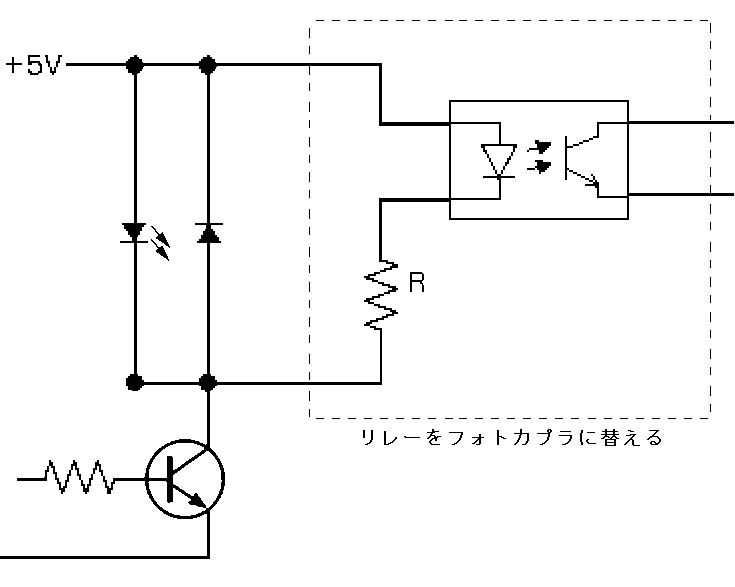
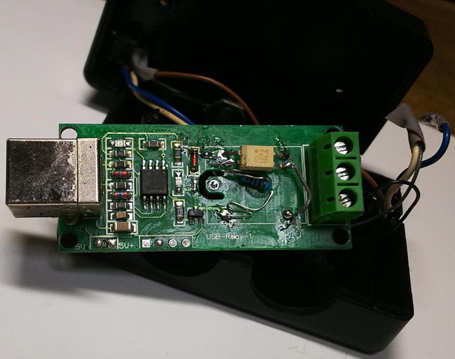
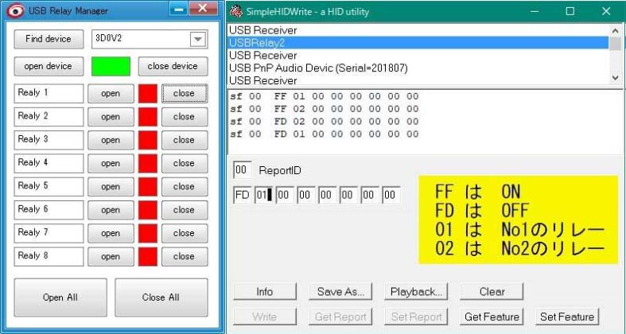
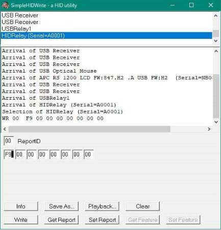

CW Interface
JJ8XNP
パソコンからCW送信するインターフェースは主にRS232C(USBシリアル変換) が主である。
ちまたに出回っているUSBリレーでやってみた。
USBリレーには、いろいろ種類がある。
その中で、基板に
USB-Relay-2、USB-Relay-1とシルク印刷されているタイプを使用
大陸から通販で300-500円位で入手できる。
このタイプは
usb_relay_device.dll
を使用してプログラムできる。
ｇithubの JanOosting/delphi-keyes-relay に使い方のソースがある。
この、USBリレー基板のリレー端子を縦振り電鍵の端子につないでCW送信できるが
カチカチとうるさいので、リレーをはずし、フォトカプラを付ける。
抵抗の値はフォトカプラのLEDに流す適正値を調べ、
フォトカプラのLEDとトランジスターの電圧降下分を考え、求め
実際に計測して決めた。
使用にあたって、総合通信局に 問い合わせたところ、申請するようにとのことで、
付属装置として変更届けを出した。


別のタイプのUSBリレーを購入、基板に、USB Relay QYF-UR02とシルク印刷されているタイプ
このタイプはHIDKomponenteを使用してプログラムできる。
Delphiのソースもあるが、いろいろとHID関連のコンポーネントをインストールしないといけないので
面倒であるが、なんとかできた。
AVRのマイコンの型番はCH551Gで中華製。
戻る
USB-Relay-2、USB-Relay-1とシルク印刷されているタイプ
Windows10 64bitPCに接続したところHID準拠ベンダー定義デバイスと認識されます。
検索で、似ている物を探して、サンプルが見つかり
（C++ USBRelay External use development library）
サンプルアプリでリレーのオンオフができました。
基板には「USB-Relay-1」とシルク印刷されています。
結構遊べそうです。
後日Delphiのソースを見つけ、プログラムできるようになりました。
Delphi interface to Keyes usb relay
SimpleHIDwriteというアプリでは、
図のように、青色の「USBRelay2」を押して選択し、
ReportID欄に「00」、その下の行に
FF 01 00 00 00 00 00 00 と入力し、「SetFeature」ボタンを押すと、リレー1がONになり
FD 01 00 00 00 00 00 00 と入力し、「SetFeature」ボタンを押すと、リレー1がOFFになる。
(この商品と同じ系列で基板にUSB-Relay2とシルク印刷されて居るリレーが2個のものでは)
FF 02 00 00 00 00 00 00 と入力し、「SetFeature」ボタンを押すと、リレー2がONになり
FD 02 00 00 00 00 00 00 と入力し、「SetFeature」ボタンを押すと、リレー2がOFFになる。
SimpleHIDwriteはDelphiのソースがあったので、プログラムできそうです。
基板にあるICはATMEL Attiny45で
端子はVcc,GND,他4pinで、AVR書き込み用と思われます。

USB Relay QYF-UR02とシルク印刷されているタイプ
使い方がわからず、ショップに問い合わせ、中国語の説明書を送ってもらう。
「5.3命令フォーマット
デフォルトの命令フォーマット：
チャネル1は開いています：0x00 0xf1、オフ：0x00 0x01。
チャネル2は開いています：0x00 0xf2、オフ：0x00 0x02。
チャネル3は開いています：0x00 0xf3、オフ：0x00 0x03。
チャネル4は開いています：0x00 0xf4、オフ：0x00 0x04。
チャネル5は開いています：0x00 0xf5、オフ：0x00 0x05。
チャネル6は開いています：0x00 0xf6、オフ：0x00 0x06。
チャネル7は開いています：0x00 0xf7、オフ：0x00 0x07。
チャネル8は開いています：0x00 0xf8、オフ：0x00 0x08。
全チャンネルオープン：0x00 0xf9、オフ：0x00 0x09。
」
HIDAPI Test Toolをネットで見つけ
写真のように、0519:2018------と表示している青色部分をクリックして、Connectボタンを押し
0 0xf9 0 0 0 0 0 0 0 と9桁の文字を入力し Send Outoput Reportボタンを押すと
2つのリレーが動作する。
HIDAPI Test ToolのCのソースがあるので、これを参考にプログラム出来そう。
後日、HIDKomponenteを見つける。
写真のように、HIDRelay (Serial=A0001)の青色部分をクリックして、
0 (ReporttID)
F9 0 0 0 0 0 0 0 と文字を入力し Writetボタンを押すと
2つのリレーが動作する。
Delphiのソースがあるので、これを参考にプログラムできた。
基板にUSB Relay QYF-UR02と印刷されている
「USB通信プログラミングテクニック」が参考になった。
